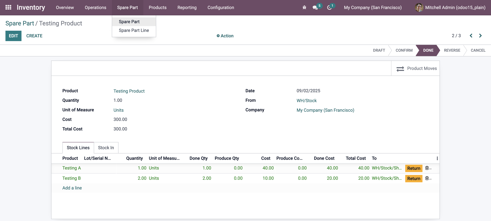

🔧 Setup Instructions
1️⃣ First, you need to add the Spare Part Tab in the Product form (for component items).
2️⃣ If you don’t see it, you can create it under Inventory > Spare Part.

3️⃣ For line checking, use the Spare Part Line.
1. Add Spare Parts to Stock
- Register new spare parts in the system
- Categorize and label parts
⬇
2. Track and Manage Stock Levels
- Monitor real-time stock levels
- Generate stock reports
⬇
3. Move Stock Between Locations
- Transfer parts to different warehouses
- Maintain movement history
⬇
4. Confirm and Validate Stock Movements
- Approve and verify stock movements
- Prevent unauthorized transfers
⬇
5. Process Stock Transactions
- Automate stock allocation
- Update system records
⬇
6. Return or Cancel Stock When Necessary
- Handle defective or incorrect parts
- Reverse transactions when required